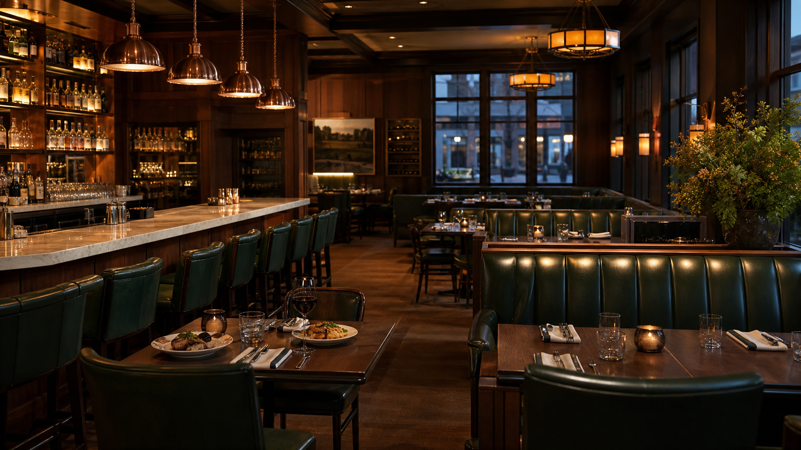

HATFIELD
GROUP
Menu
Spirits & wine
Hospitality
Find a place
Our story

77 open locations
Find a place.
Restaurants, inns, clubs, production sites and wine estates across twelve countries.
City, region or country
All
Hatfield Distillery
Hatfield Scotland
Hatfield Bar & Grill
Hatfield Inns
The Stave
Still House
Hatfield Wines
Limestone Springs
Kentucky
New York
California
London
Tuscany
Australia